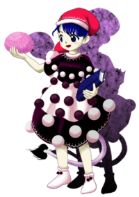
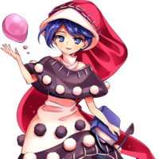

- Welcome to Touhou Wiki!
- Please register to edit. For assistance, check in with our Discord server or IRC channel.
Doremy Sweet
| ドレミー・スイート Doremy Sweet do̞ɺ̠e̞miː sɯᵝiːto̞ | |
|---|---|
|
Doremy Sweet in Antinomy of Common Flowers Ruler of DreamsMore Character Titles | |
| Species | |
| Abilities |
Eating and creating dreams |
| Occupation |
Dream World manager |
| Location | |
Music Themes | |
| |
Appearances | |
| Official Games | |
| |
| Print Works | |
| |
Doremy Sweet (ドレミー・スイート Doremī Suīto) is a baku and Ruler of the Dream World.
General Information[edit]
Doremy first appeared as the Stage 3 Boss and then as the Extra stage midboss in Legacy of Lunatic Kingdom. She later appears as a playable character in Antinomy of Common Flowers.
Abilities[edit]
Doremy's ability is to eat and create dreams. Eating dreams is much like just taking dreams, or stopping them, and possibly includes removing said dreams from memory completely. She is also able to create or craft dreams, which can be done by either moving the character from one dream to another or simply just forming a new dream for the character. She can also enter dreams herself. As someone who manages the dream world, she has a wide knowledge of dreams and can observe anyone's dream inside the dream world. As such, she can also gain knowledge of a character through their dreams alone. She is regarded by Reisen as the most dangerous youkai in the dream world.
Doremy is able to freely go between multiple worlds including Gensokyo, the Moon and Lunar Capital, as well as the Outside World. She also has the ability to clone herself and keep track of experiences and knowledge from each clone. In Antinomy of Common Flowers, she also showed that she could possess certain characters without the use of the perfect possession incident.
Although Doremy introduces herself as the "Ruler of Dreams" to a lot of characters, ZUN has commented that while it sounds amazing, it doesn't really mean much since even if someone reaches the top in a dream, it's still just a dream.[1]
Background Information[edit]
Name[edit]
Her full name is Doremy Sweet (ドレミー・スイート), which implies a western origin. "Doremy" is phonetically similar to "dreamy", and together with her last name, which in itself is a real surname, is a reference to the English expression "sweet dreams". (The dot (・) in the middle of her name is used in foreign names to show where the next word begins, as Japanese doesn't normally use spaces.)
Her name is a reference to the Sanjou route on the Ikoma Cable Line, a group of funicular routes in Nara, Japan, operated by Kintetsu Railway. The route's two cable cars are named "Do-Re-Mi (ドレミ)", which is decorated like an organ, and "Sweet (スイート)", which is decorated like a cake. Coincidentally the same company also operates a second funicular route in Osaka, the Nishi-Shigi Cable Line, which serves Mount Shigi. Mount Shigi was the site of the major backstory events of both Toyosatomimi no Miko and Mononobe no Futo, and Byakuren Hijiri and the Myouren Temple (based on the real-life Chougo-sonshi Buddhist temple).
Design[edit]
Doremy has dark blue eyes and hair, and possesses a white tail with a black tuft of fur at the tip. Her outfit consists of a black and white dress, which is covered in black and white orbs of various sizes. She wears a red nightcap, and white socks. In her left hand is a blue book with the letter D printed on the cover, and in her right is a blob of some pink material later confirmed to actually be a dream soul from Wild and Horned Hermit. Her damaged portrait after the battle reveals that she has long hair underneath the nightcap.
In Antinomy of Common Flowers, her nightcap is noticeably longer, reaching her legs. Instead of the black top of her dress, she instead wears a black capelet. The rim of her hat, capelet, and dress now has a white stitch like pattern. Her book has an added bookmark shaped like her tail.
Story[edit]
Games[edit]
- Legacy of Lunatic Kingdom
About half a year before the arrival of the protagonists, Doremy was directed by Sagume Kishin to recreate the Lunar Capital in the dream world. The purpose was to discretely redirect all people heading to the Lunar Capital, to the Capital within the dream world instead in order to hide the true Lunar Capital on the moon. However, Doremy viewed this as troublesome and had no intention to always follow through.
When the protagonists arrived about 6 months later, Doremy saw this as an opportunity as a little payback and thus, after giving a small warning, sent them to where they really wanted, the true Lunar Capital. Doremy later returns in the extra stage in an I told you so manner in regards to the warnings she had given to the protagonists.
Spin-offs[edit]
- Antinomy of Common Flowers
- Main article: Antinomy of Common Flowers: Story
The "Perfect Possession" phenomenon is affecting the Dream World and some of its inhabitants are expelled into the real world because of it. Doremy decides to oversee the situation and split herself to keep an eye on different dream dwellers in the real world.
- Violet Detector
- Main article: Violet Detector: Story
Doremy is observing Dream Sumireko Usami as she struggles in the Dream World against the dream dwellers that keep attacking her.
Literature[edit]
- Alternative Facts in Eastern Utopia
Aya Shameimaru investigates ominous occurrences where people are reporting having common dreams after using Doremy's "Sweet Sleep Pillow". These dreams apparently were all about this same figure, Doremy, asking questions about the quality of the pillow in a sort of survey within their dreams. The pillow itself is said to have become very popular among humans as well as fairies. The pillows themselves have frills along the edges and are covered with Malayan (Asian) tapirs wearing hats similar to Doremy's.
Relationships[edit]
While speaking to Reimu, Doremy spoke with direct recognition unlike her conversation with the rest of the protagonists during the events of Legacy of Lunatic Kingdom
Gallery[edit]
Doremy's pillow ad from Alternative Facts in Eastern Utopia
Doremy's portrait from Antinomy of Common Flowers
Doremy's pre-battle portrait from Antinomy of Common Flowers
Doremy's different color palettes from Antinomy of Common Flowers, the last two were added in v1.10
Skills[edit]
Spell Cards[edit]
| Name | Translated | Comments | Games | Stage | ||
|---|---|---|---|---|---|---|
| Total: 20 | ||||||
| 夢符「緋色の悪夢」 | Dream Sign "Scarlet Nightmare" | LoLK | St. 3: E/N | |||
| 夢符「緋色の圧迫悪夢」 | Dream Sign "Scarlet Oppressive Nightmare" | LoLK | St. 3: H/L | |||
| 夢符「藍色の愁夢」 | Dream Sign "Indigo Dream of Anxiety" | LoLK | St. 3: E/N | |||
| 夢符「藍色の愁三重夢」 | Dream Sign "Indigo Three-Layered Dream of Anxiety" | LoLK | St. 3: H | |||
| 夢符「愁永遠の夢」 | Dream Sign "Eternally Anxious Dream" | LoLK | St. 3: L | |||
| 夢符「刈安色の迷夢」 | Dream Sign "Ochre Confusion" | LoLK | St. 3: E/N | |||
| 夢符「刈安色の錯綜迷夢」 | Dream Sign "Ochre Labyrinthine Confusion" | LoLK | St. 3: H/L | |||
| 夢符「ドリームキャッチャー」 | Dream Sign "Dream Catcher" | LoLK | St. 3: E/N | |||
| 夢符「蒼色のドリームキャッチャー」 | Dream Sign "Azure Dream Catcher" | LoLK | St. 3: H | |||
| 夢符「夢我夢中」 | Dream Sign "Losing Oneself in a Dream" | LoLK | St. 3: L | |||
| 月符「紺色の狂夢」 | Moon Sign "Ultramarine Lunatic Dream" | LoLK | St. 3: E/N/H/L | |||
| 胡蝶「バタフライサプランテーション」 | Butterfly "Butterfly Supplantation" | LoLK | St. Ex | |||
| 超特急「ドリームエクスプレス」 | Super-Express "Dream Express" | LoLK | St. Ex | |||
| 這夢「クリーピングバレット」 | Crawling Dream "Creeping Bullet" | LoLK | St. Ex | |||
| 夢符「留紺色の逃走夢」 | Dream Sign "Deep Navy Runaway Dream" | AoCF | Use | |||
| 夢符「漆黒の宇宙夢」 | Dream Sign "Pitch-Black Cosmic Dream" | AoCF | Use | |||
| 羊符「ナイトメア・オブ・キメラ」 | Sheep Sign "Nightmare of Chimera" | AoCF | Use | |||
| ＊もう目覚めなくて良いのよ＊ | *There's No Need to Wake Up Anymore* | AoCF | Use-LW | |||
| 夢礫符「羊毛色のサイコキネシス」 | Dream Rubble Sign "Wool-Colored Psychokinesis" | Co-owner with Sumireko | AoCF | Story | ||
| 夢要符「羊毛色の乾坤一擲」 | Dream Keystone Sign "Wool-Colored Toss Staking Heaven & Earth" | Co-owner with Tenshi | AoCF | Story | ||
| 「最後の日曜日に見る悪夢」 | "The Nightmare One Has on Their Final Sunday" | VD | Nightmare Diary - 1 | |||
Additional Information[edit]
- The design of her outfit may be a reference to the body of the Malayan (Asian) tapir, which shares the name baku with the youkai in folklore. The Malayan tapir has a black upper body, white lower body, and trunk, which might be represented in Doremy's dichromatic dress and long hat, respectively.
Fandom[edit]
Official Profiles[edit]
|  | ○３面ボス 夢の支配者 ドレミー・スイート 種族：獏 夢見がちな妖怪。夢の世界に棲んでいる。 全ての生き物が見る夢は実は根底部分で繋がっている。 彼女はその夢を消したり創ったり、入れ替えたり出来る。 夢の世界を上手く使う事が出来れば何処にでも行けるし、 |
Stage 3 Boss: Ruler of Dreams Doremy Sweet Species: Baku A youkai who's often dreaming. She lives in the world of dreams. The dreams of all living creatures are, in fact, connected at the deepest levels. She can erase, create and switch out those very dreams. If one uses the dream world skillfully, they can go anywhere and become anything at all. |
| ○３面ボス 夢の支配者 ドレミー・スイート 種族：獏 夢見がちな妖怪。夢の世界に棲んでいる。 全ての生き物が見る夢は実は根底部分で繋がっている。 彼女はその夢を消したり創ったり、入れ替えたり出来る。 夢の世界を上手く使う事が出来れば何処にでも行けるし、 今回はサグメの命を受けて、月の都を夢の中に再現していた。 しかし、その計画は彼女にとって迷惑であり、乗り気では無かった様である。 そんな時、ついに夢の世界にやってきた者が現われた。 月の民は人間の穢れを嫌う。 彼女は人間の望み通り、本物の月の都へ送り込んだのだ。 |
Stage 3 Boss: Ruler of Dreams Doremy Sweet Species: Baku A youkai who's often dreaming. She lives in the world of dreams. The dreams of all living creatures are, in fact, connected at the deepest levels. She can erase, create and switch out those very dreams. If one uses the dream world skillfully, they can go anywhere and become anything at all. Under Sagume's orders, she recreated the Lunar Capital within a dream. However, it seems that this plan was bothersome to her, and she didn't feel like playing along. It was then that a visitor to the Dream World arrived. The People of the Moon hate humans' impurity. She sent the human off to the true Lunar Capital, just as they desired. |
|  | 夢を見せる妖怪
ドレミー・スイート 「私はドレミースイート 夢の世界を支配する妖怪 本来、夢の世界に引きこもっている彼女が幻想郷で目撃された 攻撃で敵から抜き出し奪うことができる「夢魂」が特徴 |
Youkai who Bestows Dreams
Doremy Sweet "My name is Doremy Sweet. A youkai who rules over the world of dreams. She normally stays cooped up in the dream world, but she's recently been seen in Gensokyo. Her special trait is her ability to pluck "Dream Souls" out of opponents with her attacks. |
Official Sources[edit]
- 2015/05/10 Legacy of Lunatic Kingdom trial - omake.txt (trial profile, Stage 3 dialogue)
References[edit]
- ↑ Strange Creators of Outer World: Antinomy of Common Flowers Interview with ZUN and Iruka Unabara - ZUN: Being the ruler of dreams sounds amazing, but it's really not all that much. Even if you work super hard to reach the top in a dream, it's still just a dream. It's not a big deal, and you don't picture baku as particularly strong youkai anyway. They just can't escape the image of the real animal. And, well, Doremy's a baku.
| This page is part of Project Characters, a Touhou Wiki project that aims to write proper descriptions for all official characters of Touhou Project. Please keep the character page guidelines in mind when contributing. |